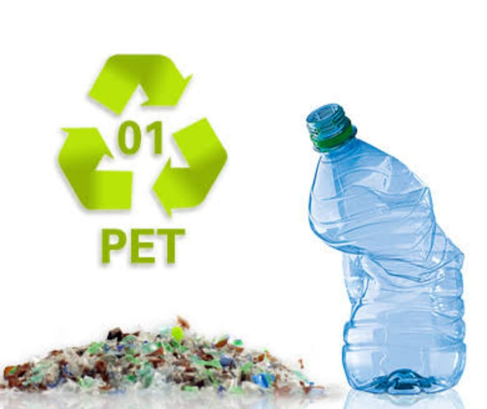
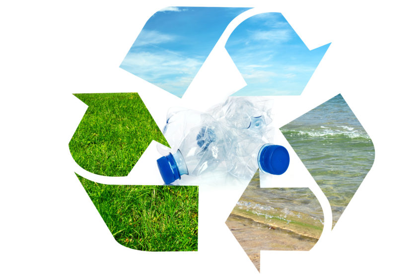

El PEC busca mejorar el entorno escolar y comunitario mediante la participación activa de estudiantes, docentes y familias en la solución de problemas reales.
 Un PEC es una iniciativa educativa que integra a la escuela y comunidad para atender una necesidad local, generalmente con énfasis en temas ambientales, sociales o culturales. Su estructura incluye diagnóstico, planificación, ejecución y evaluación, involucrando activamente a estudiantes, docentes, familias y autoridades.
Como parte del Proyecto Escolar Comunitario (PEC), promovemos la cultura del reciclaje entre estudiantes, docentes y familias. Esta imagen representa una de nuestras acciones para reducir el uso de plásticos, fomentar la separación de residuos y crear conciencia ambiental desde temprana edad. A través de actividades como la recolección de botellas, talleres de reciclaje y campañas informativas, contribuimos al cuidado del entorno y fortalecemos los valores de responsabilidad y sostenibilidad.